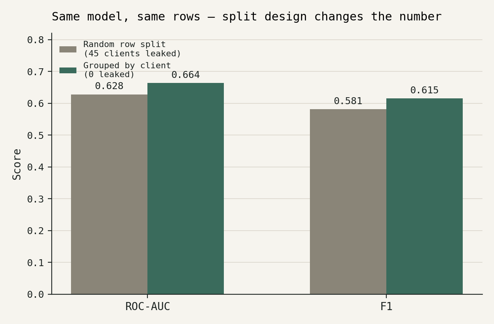
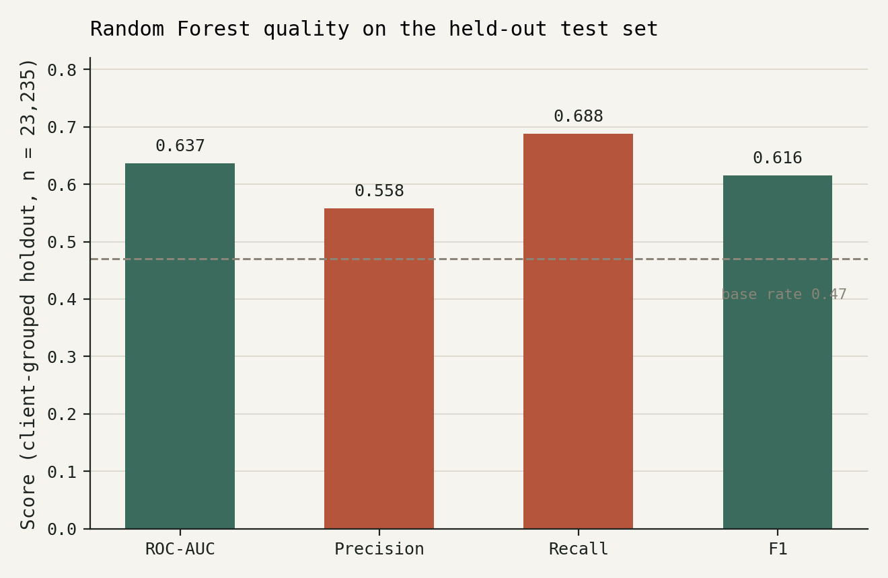
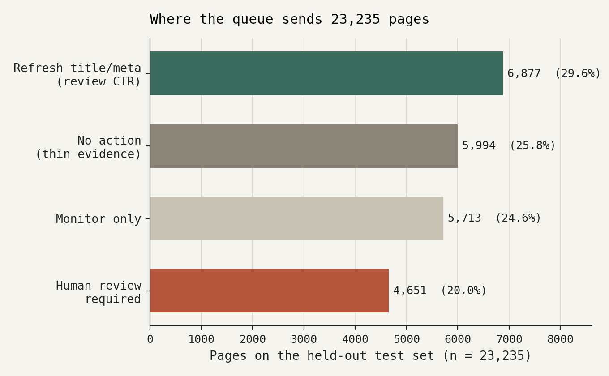
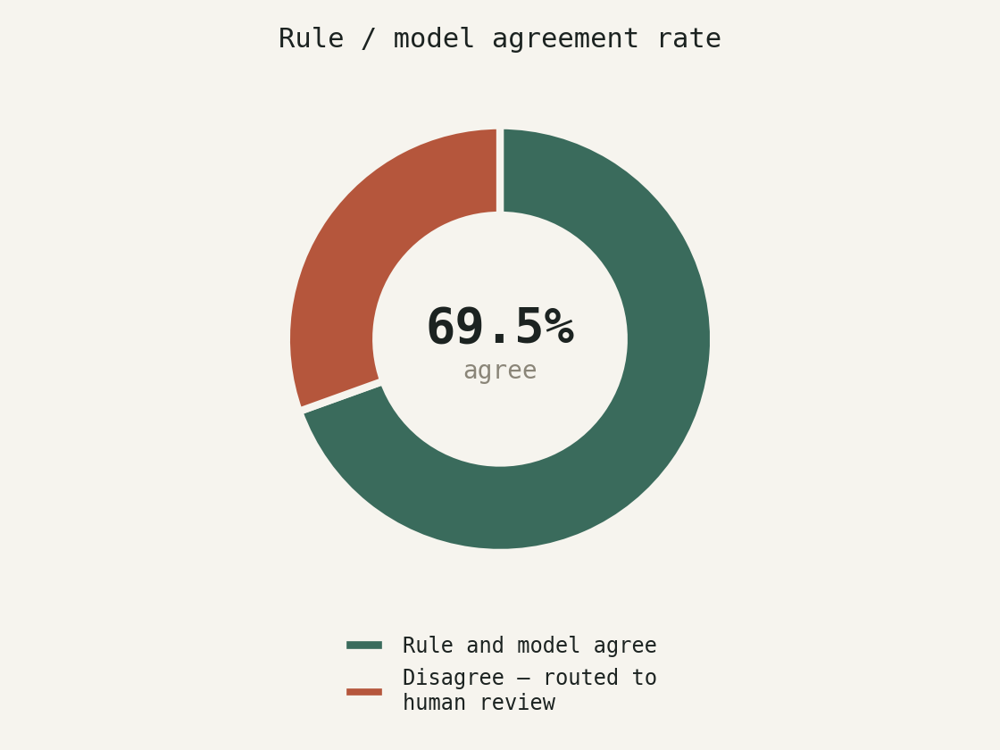

Abstract
Question: Out of a large content inventory, which pages are worth a
human editor's time first this week? Data: FlyRank's pseudonymized search
warehouse, 176,738 client-owned pages with March 2026 search activity, matched against
April 2026 outcomes across 46 clients. Method: a forward-looking label
(is_declining_next, impressions drop >20% month over month), a
client-grouped train/test split to prevent client-identity leakage, and a Random Forest
benchmarked against a hand-built CTR-gap rule on the exact same held-out rows.
Result: the model separates decliners from non-decliners at ROC-AUC 0.637
against a 0.47 base rate, and a leakage audit on the same pipeline showed a naive random
split had overstated performance by leaking 45 of 46 clients across train/test. Use:
the output is a prioritization aid for a human reviewer, not an auto-publish system. Every
recommendation below is stated at the strength the evidence actually supports. This paper
is the case study for FlyRank ML Internship Lane 2: Refresh / Content
Opportunity Scoring, whose founding question, in the lane's own words, is
which pages should be reviewed first for refresh, expansion, protection, pruning, or
monitoring. What follows is one answer to that question, built and checked on FlyRank's
own production search data.
1 · Introduction
The decision this supports
This is a case study grown from FlyRank ML Internship Lane 2 (Refresh / Content Opportunity Scoring): the kind of content-operations problem an agency's clients run into, studied on FlyRank's own pseudonymized production search data rather than a synthetic or toy dataset. A content team managing thousands of pages per client cannot manually review every page every month. Today the choice of what to look at first comes down to a simple hand-rule or gut feel, and with a large inventory, most declining pages never get looked at at all.
This work answers one question: given a page's search performance last month, should a human review it this month, and why? The output is a ranked queue with a reason code attached to every entry, not a black-box score.
Who acts on it: a content editor or SEO strategist works down the queue and decides, per page, whether to refresh, monitor, or leave it, informed by, not replaced by, the model.
Cost of a wrong call: a false positive costs an editor's time reviewing a page that didn't need it. A false negative costs a real decline going unnoticed for another month. Neither is free, which is why the queue routes uncertain and low-evidence pages to human review or no action rather than forcing a confident call either way.
2 · Data
What this is built on
FlyRank's internship warehouse, a pseudonymized, production-scale release of daily search performance, roughly 79 million rows hosted as Parquet and queried directly via DuckDB (no full download). This paper uses two monthly partitions from that release:
Tables and windows
fact_content_daily_performance: partitioned by month;month=2026-03supplies the features,month=2026-04supplies the outcome. Rows are filtered togsc_data_available IS TRUEand non-zero March impressions.content_hash_id/client_hash_id, pseudonymous identifiers, used only for joins and for grouping the train/test split, never as model features.
What was excluded, and why
- Content metadata (
word_count,content_type,last_optimized_datefromdim_content). These describe the page's current state, not its state at the point the feature window closed. Using them would let information from after the prediction date leak into the features. - 18,189 pages (10.3%) that appeared in March but never got a matched April row. These vanished between months and are invisible to this whole comparison. See Limitations for why this matters.
- No client names, page URLs, or raw queries appear anywhere in this paper or the underlying notebooks. Every identifier below is a pseudonymous hash.
3 · Methodology
Label, features, baseline, and how the split was defended
The label
is_declining_next = 1 when a page's Google Search Console impressions drop
more than 20% from March to April, restricted to pages with search data available in both
months. This mirrors the starter kit's own trend-direction threshold, applied forward instead
of retrospectively. The label is built strictly from the month after the feature
window, so nothing about April leaks into March's numbers.
Features
All derived from the March partition only: impressions_month,
clicks_month, avg_position_month, ctr_month, log-scaled
impression and click counts, and a five-bucket position_bucket category. No
current-state content metadata is included (see Data).
The baseline rule
A hand-built rule from an earlier stage of this project: flag a page when it has a "decent" position (≤20) and its click-through rate underperforms its position band's average by more than 30%, weighted by demand (impressions). The one data-dependent piece of the rule, the expected CTR per position band, was recalibrated on the training split only, not the full dataset, so the comparison to the model is fair.
Validation design
Rows are split with GroupShuffleSplit, grouped by client_hash_id,
75/25 train/test. This keeps every client entirely on one side of the split. A random
row-level split would let the same client's pages sit in both train and test, letting the
model learn that client's own baseline noise rather than a pattern that generalizes to a new
client.
Leakage checks run
- Split-design ablation: the same model was scored once on a naive random row split and once on the client-grouped split, to measure how much of the naive score was client-identity memorization rather than signal (Results, Figure 1).
- Single-feature collapse test: the model was retrained with each of its three strongest features removed one at a time. None caused the ROC-AUC to collapse toward the base rate, the signature the leakage checklist treats as a confession of a label-derived feature. No such feature was found in this set.
- Content-metadata exclusion, verified empirically: confirmed by
inspection that no current-state
dim_contentcolumn made it into the feature set, not just stated as policy.
4 · Results
Model vs. baseline, same held-out rows
Two results are reported here, from two runs on this pipeline: the split-design audit (logistic regression, before/after the leakage fix) and the final playbook run (random forest, the model this queue is built on).

The final queue is built on a Random Forest, trained on 135,314 rows (34 clients) and evaluated on a held-out 23,235 rows (12 clients) that never touched training.

Where the queue sends the 23,235 held-out pages

no_action_thin_evidence rather than scored. There isn't enough signal to
trust a decision either way. 20.0% land in human_review_required, where the
rule and model disagree.

5 · Limitations & honest framing
What this work cannot claim
This is cross-sectional, single-snapshot decision support, not a causal claim. "These pages are worth reviewing first, because the model's forward-looking signal says so" is the sentence this evidence carries. "Refreshing these pages will fix them" is not. No experiment was run.
- The churn-bias gap. 18,189 pages (10.3%) that had March activity never got a matched April outcome and are invisible to this entire comparison, likely disproportionately the worst-outcome pages, since a page can vanish from search data by losing all visibility. Both the rule and the model are blind to this group in the same way.
- Single time window. The model learned March→April patterns for this specific client mix. A different season, or a newly onboarded client with a different traffic profile, may not match what it learned.
- Client-grouped validation proves generalization within this snapshot, not beyond it. The split shows the model works on clients it never trained on, among the clients present in this release. It says nothing about a client whose industry or traffic pattern looks nothing like anyone here.
- Modest recall/precision. Precision 0.558 means roughly 4 in 9 flagged pages are, per this label, not actually declining next month. This is a triage aid, and every flag still needs a human look before action.
- The decay/refresh relationship is associational, not causal. Any pattern where "pages that got refreshed later scored better" compares pages that were chosen for refresh against pages that weren't. Content teams likely chose pages that still had some residual signal worth saving. Part of any observed lift is the choosing, not the refresh. This paper does not claim refreshing a flagged page will fix it, only that the page is worth a look.
6 · Ranked recommendations
The action playbook
A plain-English archetype-to-action map a reviewer can sanity-check without opening the model:
| Archetype | What it means | Suggested action |
|---|---|---|
| Declining + low CTR on a visible page | Ranks fine and gets seen, but click-through underperforms what that position normally earns | Refresh title/meta, review CTR. Cheapest fix; the page already has position |
| Declining + model flags forward risk only | Model sees risk; CTR isn't the obvious lever | Refresh content, re-review after 30 days, less certain than the CTR case |
| Rule and model agree (stable) | Both signals agree the page is fine | Monitor only, no action; cheapest of all is doing nothing |
| Rule and model disagree | One signal says act, the other says don't | Human review required before any action, this zone contains real, non-random cases, not noise |
| Thin evidence | Below the 100-impression floor, barely enough traffic to measure a trend from | No action from this pipeline, unscored, not confirmed healthy |
What should not be automated
- No auto-publish. Every flagged page gets a human read before a content change. The model has no access to brand voice, legal constraints, or client-specific context.
- No auto-scheduling refreshes from a model risk flag alone. That's a forward signal, not a confirmed cause.
- No scoring a client the model has never seen without first checking their traffic profile resembles a client it trained on.
- No treating thin-evidence pages as "confirmed fine". They're unscored, not cleared.
Monitoring: what would tell you this went stale
| Signal | Rough trigger |
|---|---|
| Test-set base rate drift, month over month | Moves >~10 percentage points → traffic environment shifted, retrain before trusting the queue |
| Model ROC-AUC on a fresh holdout | Drops meaningfully below 0.637 → treat the queue as unreliable until retrained |
| Rule/model agreement rate | Sudden drop from ~69.5% → one of the two signals likely broke |
| Churn/join-drop rate | Sharp rise above ~10.3% → more pages disappearing between months than usual |
| Reviewer override rate | Rising overrides is the most direct signal the queue's advice is drifting |
Retrain cadence: monthly, matching the feature-month → label-month cadence this whole design is built on.
7 · Reproducibility
Rerun or inspect this work
Every number above traces back to a notebook committed in the repo, run against the live
warehouse via DuckDB. Seeds are fixed (random_state=42 throughout).
- w05: model build, split design, feature policy
- w06: validation & leakage audit (the split comparison in Figure 1)
- w07: the action playbook, the final Random Forest run, and every Results number above
- capstone.ipynb: the notebook this paper mirrors
- Full repository
To rerun: open any notebook via its Colab badge, supply a Hugging Face access token as the
AccessToken Colab secret (read access to the warehouse dataset), and run top to
bottom.
8 · Acknowledgments & data credit
Built on the FlyRank ML Internship dataset, a pseudonymized, production-scale search performance warehouse provided as part of the FlyRank ML Internship program. Learn more at flyrank.ai.